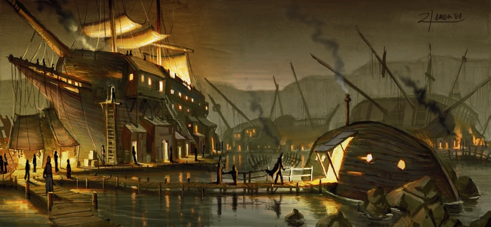

<!DOCTYPE html>
<html style="height: 100%;">
<head>
  <!-- Page Title -->
  <title>Waterdeep Map</title>

  <!-- Responsive design meta tag -->
  <meta name="viewport" content="width=device-width, initial-scale=1.0">

  <!-- Stylesheets -->
  <link rel="stylesheet" href="scripts/leaflet.css">
  <link rel="stylesheet" href="scripts/updated-leaflet-search.min.css">

  <!-- JavaScript Libraries -->
  <script src="data/locations.js"></script>
  <script src="scripts/leaflet.js"></script>
  <script src="scripts/leaflet-search.min.js"></script>
  
</head>


<body style="height: 100%; margin: 0;">
  <!-- Map Container -->
  <div id="map" style="width: 100%; height: 100%; background: #6d7993;"></div>

  <script type="text/javascript">
  
  
  
    // Initialize the map
    var map = L.map('map').setView([0, 0], 0);
    L.tileLayer('map/{z}/{x}/{y}.png', {
      continuousWorld: false,
      noWrap: true,  
      minZoom: 2,
      maxZoom: 6,
    }).addTo(map);
    
    map.setView([62.714462, 21.291504], 4);
	<!-- Map Boundies -->
	//var mapSW = [-84,-109], mapNE = [83.5,123.5];
	//map.setMaxBounds(new L.LatLngBounds(mapSW, mapNE));	
	
	
	
	// Custom control for displaying an image in a popup
	var ImagePopoutControl = L.Control.extend({
		onAdd: function(map) {
			var container = L.DomUtil.create('div', 'leaflet-control leaflet-bar');
			var button = L.DomUtil.create('a', '', container);
			button.style.backgroundImage = "url('scripts/images/side_view.png')";
			button.style.backgroundSize = 'contain';
			button.style.backgroundRepeat = 'no-repeat';
			button.style.backgroundPosition = 'center';
			button.href = '#';
			button.style.width = '30px';
			button.style.height = '30px';
			button.style.display = 'block';

			var popoutDiv; // Declare popoutDiv outside so it's accessible in the button click listener

			// Event listener for mouse click
			button.onclick = function(e) {
				e.preventDefault(); // Prevent default anchor behavior

				// Toggle the popout div based on its existence
				if (!popoutDiv) {
					popoutDiv = document.createElement('div');
					popoutDiv.style.position = 'absolute';
					popoutDiv.style.left = '50px';
					popoutDiv.style.top = '10px';
					popoutDiv.style.width = '40%';
					popoutDiv.style.height = 'auto';
					popoutDiv.style.zIndex = '1000';
					popoutDiv.style.pointerEvents = 'auto';

					var image = document.createElement('img');
					image.src = 'images/waterdeep.png';
					image.style.width = '100%';
					image.style.height = 'auto';
					popoutDiv.appendChild(image);

					map.getContainer().appendChild(popoutDiv);
				} else {
					// Remove the popout if it's already visible
					map.getContainer().removeChild(popoutDiv);
					popoutDiv = null;
				}
			};

			// Global click listener to close the popout
			document.addEventListener('click', function(event) {
				if (popoutDiv && !popoutDiv.contains(event.target) && !button.contains(event.target)) {
					// Remove the popout if the click is outside the popout and not on the button itself
					map.getContainer().removeChild(popoutDiv);
					popoutDiv = null; // Nullify the popoutDiv reference
				}
			});

			return container;
		},
	});

	// Add the new control to the map
	map.addControl(new ImagePopoutControl({ position: 'topleft' }));


	
	// Custom control for hiding/showing all markers
	var HideShowControl = L.Control.extend({
		onAdd: function(map) {
			var container = L.DomUtil.create('div', 'leaflet-control leaflet-bar');
			var button = L.DomUtil.create('a', '', container);

			// Set initial background image to 'show.png'
			button.style.backgroundImage = "url('scripts/images/show.png')";
			button.style.backgroundSize = 'contain';  // Ensure the icon size fits the button
			button.style.backgroundRepeat = 'no-repeat';
			button.style.backgroundPosition = 'center';
			button.href = '#';
			button.style.width = '30px';  // Adjust width as needed
			button.style.height = '30px';  // Adjust height as needed
			button.style.display = 'block';  // Changed from 'marker' to 'inline-block'

			button.onclick = function() {
				console.log('Toggle Visibility');
				toggleMarkers(button);  // Pass the button element to the function
				return false;
			};

			return container;
		}
	});

	// Function to toggle markers and switch icons
	var markersVisible = true;

	function toggleMarkers(button) {
		if (markersVisible) {
			for (var layer in overlays) {
				map.removeLayer(overlays[layer]);
			}
			button.style.backgroundImage = "url('scripts/images/hide.png')";  // Change to 'hide.png'
			markersVisible = false;
		} else {
			for (var layer in overlays) {
				map.addLayer(overlays[layer]);
			}
			button.style.backgroundImage = "url('scripts/images/show.png')";  // Change back to 'show.png'
			markersVisible = true;
		}
	}

	// Add the new control to the map
	map.addControl(new HideShowControl({ position: 'topright' }));

	
	
	
    // Define Icons for different locations
    var Base = L.icon({
		iconUrl:       'icons/base.png',
		iconRetinaUrl: 'icons/base.png',
		shadowUrl:     'scripts/images/marker-shadow.png',
		iconSize:    [25, 41],
		iconAnchor:  [12, 41],
		popupAnchor: [1, -34],
		tooltipAnchor: [2, -28],
		shadowSize:  [41, 41]
	});
	
    var Academy = L.icon({
		iconUrl:       'icons/academy.png',
		iconRetinaUrl: 'icons/academy.png',
		shadowUrl:     'scripts/images/marker-shadow.png',
		iconSize:    [25, 41],
		iconAnchor:  [12, 41],
		popupAnchor: [1, -34],
		tooltipAnchor: [2, -28],
		shadowSize:  [41, 41]
	});
	
	var Business = L.icon({
		iconUrl:       'icons/businesses.png',
		iconRetinaUrl: 'icons/businesses.png',
		shadowUrl:     'scripts/images/marker-shadow.png',
		iconSize:    [25, 41],
		iconAnchor:  [12, 41],
		popupAnchor: [1, -34],
		tooltipAnchor: [2, -28],
		shadowSize:  [41, 41]
	});
	
	var City_Building = L.icon({
		iconUrl:       'icons/city_building.png',
		iconRetinaUrl: 'icons/city_building.png',
		shadowUrl:     'scripts/images/marker-shadow.png',
		iconSize:    [25, 41],
		iconAnchor:  [12, 41],
		popupAnchor: [1, -34],
		tooltipAnchor: [2, -28],
		shadowSize:  [41, 41]
	});
	
	var Guildhall = L.icon({
		iconUrl:       'icons/guildhall.png',
		iconRetinaUrl: 'icons/guildhall.png',
		shadowUrl:     'scripts/images/marker-shadow.png',
		iconSize:    [25, 41],
		iconAnchor:  [12, 41],
		popupAnchor: [1, -34],
		tooltipAnchor: [2, -28],
		shadowSize:  [41, 41]
	});
	
	var Noble_Villa = L.icon({
		iconUrl:       'icons/noble_villa.png',
		iconRetinaUrl: 'icons/noble_villa.png',
		shadowUrl:     'scripts/images/marker-shadow.png',
		iconSize:    [25, 41],
		iconAnchor:  [12, 41],
		popupAnchor: [1, -34],
		tooltipAnchor: [2, -28],
		shadowSize:  [41, 41]
	});
	
	var Residence = L.icon({
		iconUrl:       'icons/residence.png',
		iconRetinaUrl: 'icons/residence.png',
		shadowUrl:     'scripts/images/marker-shadow.png',
		iconSize:    [25, 41],
		iconAnchor:  [12, 41],
		popupAnchor: [1, -34],
		tooltipAnchor: [2, -28],
		shadowSize:  [41, 41]
	});
	
	var Places_Streets = L.icon({
		iconUrl:       'icons/streets.png',
		iconRetinaUrl: 'icons/streets.png',
		shadowUrl:     'scripts/images/marker-shadow.png',
		iconSize:    [25, 41],
		iconAnchor:  [12, 41],
		popupAnchor: [1, -34],
		tooltipAnchor: [2, -28],
		shadowSize:  [41, 41]
	});
	
	var Inn_Tavern_Festhall = L.icon({
		iconUrl:       'icons/tavern.png',
		iconRetinaUrl: 'icons/tavern.png',
		shadowUrl:     'scripts/images/marker-shadow.png',
		iconSize:    [25, 41],
		iconAnchor:  [12, 41],
		popupAnchor: [1, -34],
		tooltipAnchor: [2, -28],
		shadowSize:  [41, 41]
	});
	
	var Miscellaneous = L.icon({
		iconUrl:       'icons/miscellaneous.png',
		iconRetinaUrl: 'icons/miscellaneous.png',
		shadowUrl:     'scripts/images/marker-shadow.png',
		iconSize:    [25, 41],
		iconAnchor:  [12, 41],
		popupAnchor: [1, -34],
		tooltipAnchor: [2, -28],
		shadowSize:  [41, 41]
	});
	
	var Temple = L.icon({
		iconUrl:       'icons/temple.png',
		iconRetinaUrl: 'icons/temple.png',
		shadowUrl:     'scripts/images/marker-shadow.png',
		iconSize:    [25, 41],
		iconAnchor:  [12, 41],
		popupAnchor: [1, -34],
		tooltipAnchor: [2, -28],
		shadowSize:  [41, 41]
	});
	
	var Warehouse = L.icon({
		iconUrl:       'icons/warehouse.png',
		iconRetinaUrl: 'icons/warehouse.png',
		shadowUrl:     'scripts/images/marker-shadow.png',
		iconSize:    [25, 41],
		iconAnchor:  [12, 41],
		popupAnchor: [1, -34],
		tooltipAnchor: [2, -28],
		shadowSize:  [41, 41]
	});
	
	
	// Draggable marker for coordinate finding. Comment this out when  not in use
    var marker = L.marker([0, 0], {
      draggable: true,
    }).addTo(map);
    marker.bindPopup('LatLng Marker').openPopup();
    marker.on('dragend', function(e) {
      marker.getPopup().setContent(marker.getLatLng().toString()).openOn(map);
    });
	
    // Layer for searchable markers
    var searchableLayer = L.layerGroup().addTo(map);


	// Create ward polygons
	wards.forEach(function(ward) {
		var polygon = L.polygon(ward.coordinates, {
			color: ward.color,
			fillColor: ward.fillColor,
			opacity: ward.opacity,
			fillOpacity: ward.fillOpacity
		})
		.bindPopup(ward.popupContent)
		.bindTooltip(ward.tooltipContent, { permanent: false, direction: 'top' })
		.addTo(map);

		setupHoverEffects(polygon);
	});

	// Function to change the style on mouseover and mouseout
	function setupHoverEffects(layer) {
		layer.on('mouseover', function() {
			this.setStyle({
				opacity: 1, // Make stroke visible
			});
		});

		layer.on('mouseout', function() {
			this.setStyle({
				opacity: 0, // Make stroke invisible
			});
		});
	}

	
	
	
	
	var mistshore = L.polygon([[-45.5, -55], [-43, -48], [-44, -42.5], [-44, -36], [-47, -34], [-51, -39], [-52, -46], [-51, -51.5], [-47, -55]], {
	color: 'red', title: "Mistshore", icon: Places_Streets, opacity: 0.3})
	.bindPopup('<b>Mistshore</b><br><i>Dock Ward</i><p>A dangerous place filled with smugglers and criminals.</p>')
	.bindTooltip('Mistshore', {permanent: false, direction: 'top'})
	.addTo(map);
	
	// Create layer groups
	var mg_base = L.layerGroup().addTo(map);
	var mg_city_building = L.layerGroup().addTo(map);
	var mg_academy = L.layerGroup().addTo(map);
	var mg_temple = L.layerGroup().addTo(map);
	var mg_warehouse = L.layerGroup().addTo(map);
	var mg_residence = L.layerGroup().addTo(map);
	var mg_business = L.layerGroup().addTo(map);
	var mg_guildhall = L.layerGroup().addTo(map);
	var mg_inn_tavern_festhall = L.layerGroup().addTo(map);
	var mg_noble_villa = L.layerGroup().addTo(map);
	var mg_places_streets = L.layerGroup().addTo(map);
	var mg_miscellaneous = L.layerGroup().addTo(map);
	

	// Create location markers
	locations.forEach(function(location) {
	  var popupContent = location.description + 
						 '<br>';

	  var iconName = location.type[0].replace(/ /g, '_');
	  var icon = window[iconName] || Miscellaneous; // Use Miscellaneous as default if icon not found

	  var marker = L.marker(location.coordinates, {icon: icon, title: location.name})
		.bindPopup(popupContent)
		.bindTooltip(location.name, {permanent: false, direction: 'top'})
		.addTo(searchableLayer);

	  // Add the marker to all appropriate layer groups
	  location.type.forEach(function(type) {
		var groupName = type.toLowerCase().replace(/[,&]/g, '').replace(/ /g, '_');
		if (window['mg_' + groupName]) {
		  window['mg_' + groupName].addLayer(marker);
		}
	  });
	});


	// Overlay groups for different types of locations
	var overlays = {
	  "Bases" : mg_base,
	  "City Buildings" : mg_city_building,
	  "Academies" : mg_academy,
	  "Temples" : mg_temple,
	  "Warehouses" : mg_warehouse,
	  "Residences" : mg_residence,
	  "Businesses" : mg_business,
	  "Guildhalls" : mg_guildhall,
	  "Inns, Taverns, Festhalls" : mg_inn_tavern_festhall,
	  "Noble Villas" : mg_noble_villa,
	  "Places & Streets" : mg_places_streets,
	  "Miscellaneous" : mg_miscellaneous,
	};

    // Layer control for toggling overlays
    L.control.layers(null, overlays).addTo(map);
	
  
    // Search control
	var searchControl = new L.Control.Search({
	  layer: searchableLayer,
	  propertyName: 'title',
	  marker: false,
	  moveToLocation: function(latlng, title, map) {
		// Loop through all overlay groups to find the marker
		for (var groupName in overlays) {
		  var group = overlays[groupName];
		  var marker = group.getLayers().find(layer => layer.options.title === title);

		  // If marker is found within this group
		  if(marker) {
			if (!map.hasLayer(group)) {
			  map.addLayer(group); // Enable the group if it's not already active
			}
			map.setView(latlng, 17); // Set view and zoom level
			marker.openPopup(); // Open the popup for the marker
			break; // Stop the loop as we found our marker
		  }
		}
	  }
	});
	map.addControl(searchControl);

	

  </script>
</body>
</html>
